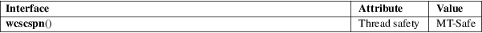

wcscspn − search a wide-character string for any of a set of wide characters
Standard C library (libc, −lc)
#include <wchar.h>
size_t wcscspn(const wchar_t *wcs, const wchar_t *reject);
The wcscspn() function is the wide-character equivalent of the strcspn(3) function. It determines the length of the longest initial segment of wcs which consists entirely of wide-characters not listed in reject. In other words, it searches for the first occurrence in the wide-character string wcs of any of the characters in the wide-character string reject.
The wcscspn() function returns the number of wide characters in the longest initial segment of wcs which consists entirely of wide-characters not listed in reject. In other words, it returns the position of the first occurrence in the wide-character string wcs of any of the characters in the wide-character string reject, or wcslen(wcs) if there is none.
For an explanation of the terms used in this section, see attributes(7).

C11, POSIX.1-2008.
POSIX.1-2001, C99.
strcspn(3), wcspbrk(3), wcsspn(3)